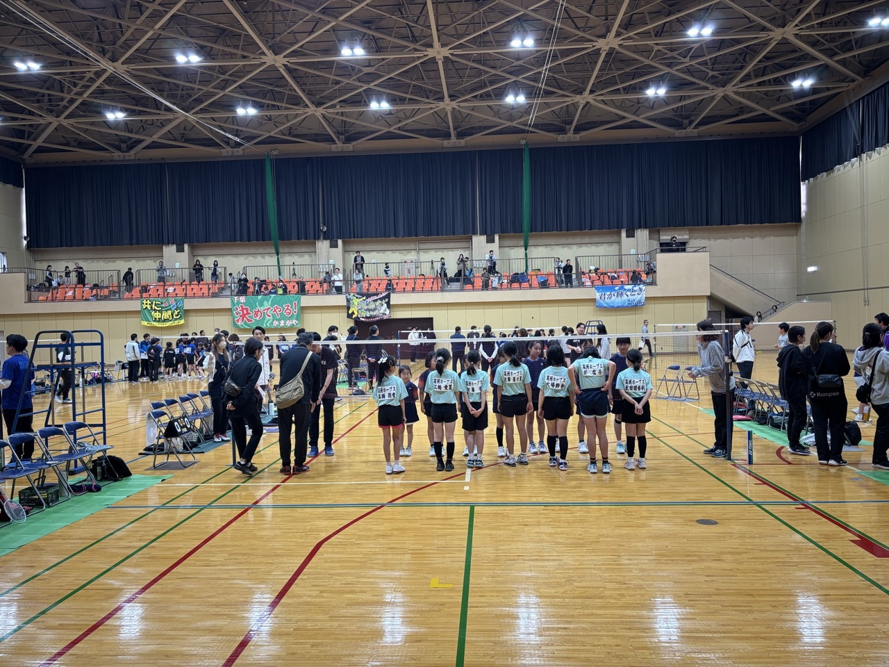
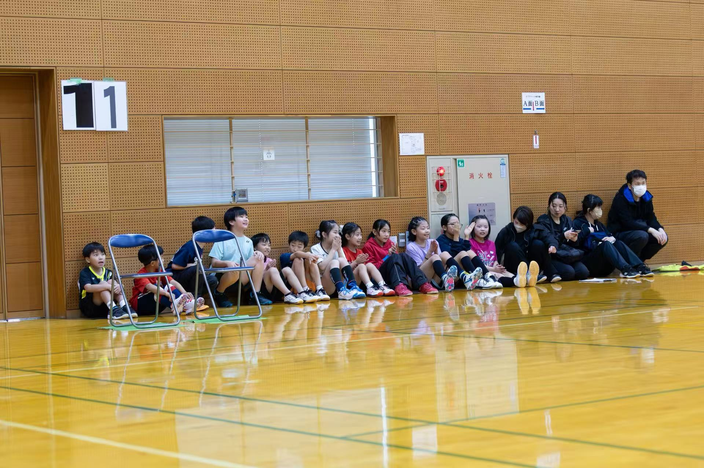
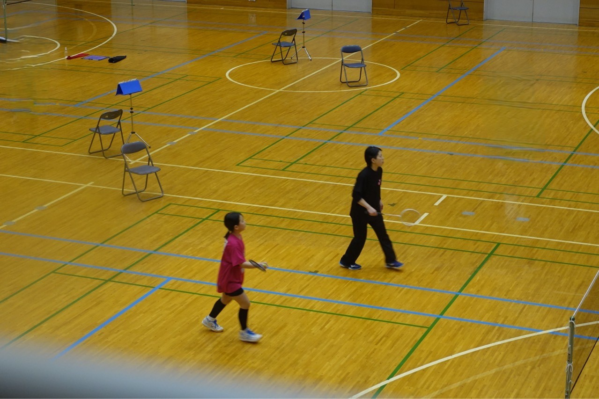

2026.05.28 01:36
🌸第42回 若葉カップ千葉県予選
6月24日、若葉の県予選女子団体戦に7名で挑みました。 団体戦は、ただ「強い選手が勝てばいい」というものではありません。1本、1点、そのすべてがチーム全体の結果につながる、本当に重みのある戦いです。 今回出場した7人も、それぞれが自分の役割をしっかり意識しながらコートに立っていました。 試合に出る選手だけではなく、応援する選手、次に備えて準備する選手、ベンチ...
Chiba Mihama Junior Badminton Club
千葉市美浜区で活動する、小学生以下対象のジュニアバドミントンクラブです。
高洲ホープスは、バドミントンを千葉市美浜区で小学生対象として技術・成績の向上だけでなく、挨拶・礼儀・感謝・思いやりの気持ちなどを実行できる事を大切に、2000年5月 荒川 時男が創立したバドミントンクラブです。
発足当初から、試合には積極的に出場し千葉県代表として、多くの選手を関東大会及び全国大会に出場を果たしてきました。
現在、小学生以下(幼児含む)男女約25名がしつけ＆マナーを学びながら熱い指導者の下で試合に勝つ喜びを親子で分かち合っています。
また、クラブの運営には保護者方の協力が欠がません。子供の成長を共に体験しながらバドミントンを楽しむ事をお勧めします。
2026年4月25日よりInstagramを開設いたしました。ぜひご覧いただき、フォローのほどよろしくお願いいたします。
トップ選手の試合映像を紹介します。練習や試合を見るきっかけとしてご覧ください。
創立者：荒川 時男
監督：丹 正人
コーチ：5名

2026.05.28 01:36
6月24日、若葉の県予選女子団体戦に7名で挑みました。 団体戦は、ただ「強い選手が勝てばいい」というものではありません。1本、1点、そのすべてがチーム全体の結果につながる、本当に重みのある戦いです。 今回出場した7人も、それぞれが自分の役割をしっかり意識しながらコートに立っていました。 試合に出る選手だけではなく、応援する選手、次に備えて準備する選手、ベンチ...

2026.03.30 04:50
28日、29日の2日間、県内で一年で最も重要な学年別大会が開催されました。今年はホープスから22名が出場し、それぞれがこの一年間の練習の成果を発揮する舞台に立ちました。本大会は単なる試合ではなく、自分自身の成長を確認し、今後の課題を見つける大切な機会でもあります。 試合が始まると、会場には独特の緊張感が漂い、普段とは違う雰囲気に包まれました。コート上では真剣...

2026.03.26 02:21
3月22日に6年生の送別会を行いました。毎年のことながら、時間の流れの速さを実感します。今年のホープスからは、9名の6年生が卒業を迎えました。まだ桜も咲ききっていない、どこか切なさの漂うこの季節に、彼らの歩みを振り返る特別な一日となりました。 在部期間はそれぞれ異なり、長くチームを支えてくれた子もいれば、途中から加わりながらも大きく成長した子もいます。しかし...

2026.02.13 04:47
先日行われた親子で楽しむバドミントン大会には、全12組の親子が参加し、会場は終始あたたかい雰囲気に包まれました。 普段は子どもたちが主役の大会ですが、この日はお父さん・お母さんもコートに立ち、同じ目線でシャトルを追いかけます。 最初は少し緊張気味だった保護者の方々も、ラリーが続くうちに自然と笑顔に。 子どもたちも、いつもとは違う“パートナー”とのダブルスにワ...

2026.02.02 00:55
2026年1月24日・25日に行われた「第10回関東ていがくねんオープン茨城」に、HOPESから3名の選手が出場しました。 今大会は15点制の打ち切り方式で、序盤の数点が試合全体を大きく左右します。 小さな判断ミスや単純なミスが続くと、修正する前に試合が終わってしまう厳しさを改めて感じました。特にスロースターターの選手にとっては、試合開始直後のラリーの組み立...

2026.01.05 04:36
毎年恒例の新春ホープス杯が、今年も元気いっぱいに開催されました。 新年最初の活動は、ラケットを握る前に体を動かすところから始まります。午前中は全員参加の5kmマラソン。冷たい空気の中、それぞれのペースで走りながら、新しい一年への気持ちを整える大切な時間となりました。 5kmは決して楽な距離ではありませんが、最後まで諦めずに走り切る姿から、子どもたち一人ひとり...